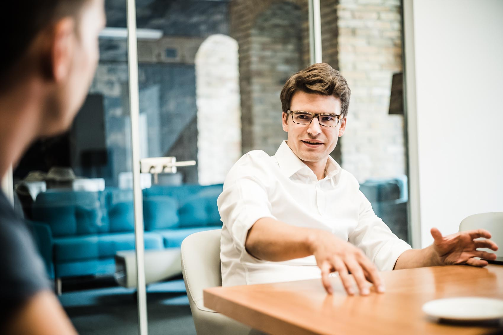

Our story
We set out on this journey after spending years in the startup ecosystem: Andy as a founder and Marton as a VC investor.
During our time, we were amazed to see how efficient startups could be and how easy they can replicate a large portion of what corporations do simply because of their ability to use the latest technologies and fully understanding how to use available products, tools and available resources effectively.
We realized that this speed and efficiency is missing from top companies, where we can help to overcome the inertia that is prevalent among corporations.

How does this work?
It's pretty simple, really.
- We have a discussion and you tell us what would be interesting to you.
- We go through our database and come up with potential companies that we think could be a good fit for you to acquire.
- We approach the targets, find out intent and work out an offer.
- We hold your hand during the acquisition process, work with lawyers and due diligence providers, help you sign and close fast.
How long is the process?
Depends on a lot of factors but typically 6-9 months from start to finish.
How much does it cost?
We work on a retainer + success fee basis, calculated individually for every client.
Am I your Ideal Customer?
Are you a medium to large company where innovation is always a topic but you struggle to make it "happen"? Chances are, we can help you in most cases.